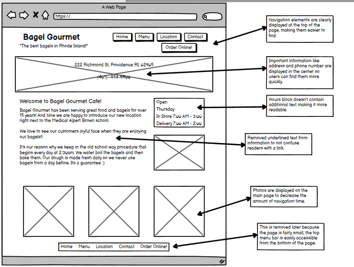
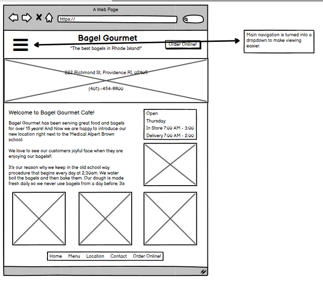
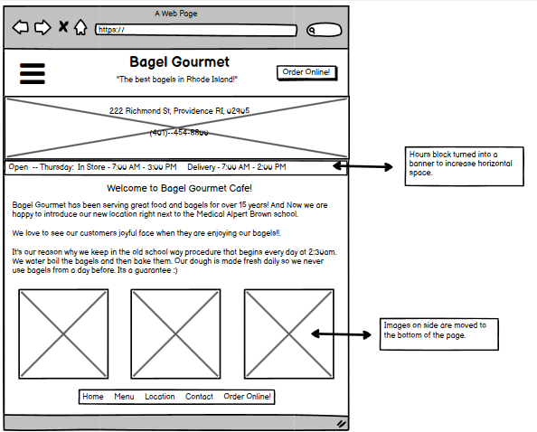
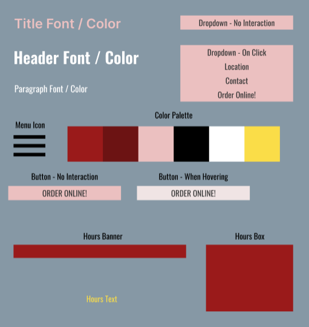
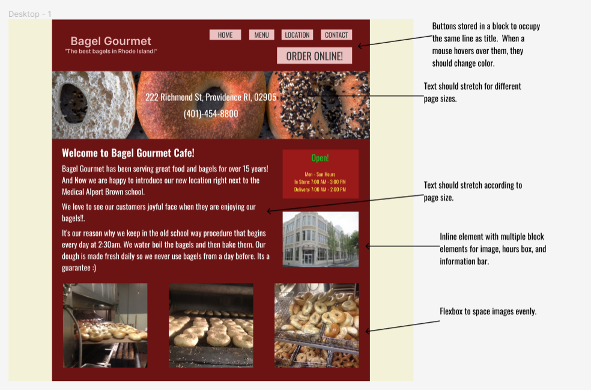
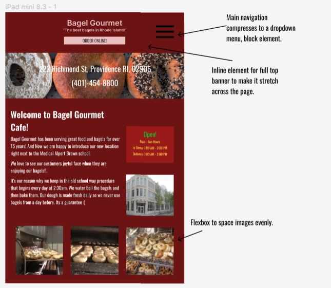
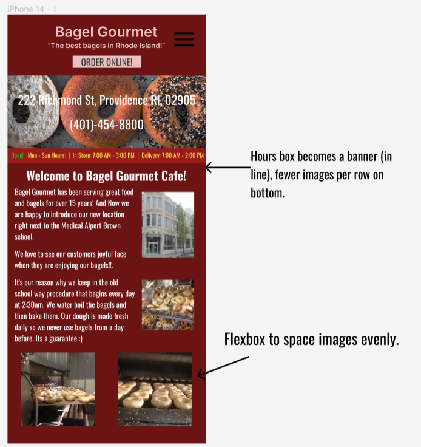

Bagel Gourmet Cafe Webpage
Introduction
Bagel Gourmet is a popular restaurant chain local to Providence which serves
breakfast sandwiches. I have gone there often myself, and consequently
experienced viewing their webpage. The webpage features
information about one of their restaurants, including its location, menu, and a
contact page. While exploring their webpage deeper, I found some "secret" options
in their menu. For example, clicking "menu" in the top bar brings you to the menu page,
which on the sidebar has a "shopping cart" option for placing online orders. I would
have not known this option existed otherwise. I decided I will try to redesign their
main webpage because some of its features are hidden and the layout can be improved,
also because I like sandwiches.

A picture of Bagel Gourmet's
website .
Webpage Problems
I will start by creating a list of the issues I have with Bagel Gourmet's website
so I can address them in my redesign.
- The main page has overlapping images, there are delivery hours featured on
the page, but not store hours. There is not a clear hierarchy of font colors and
sizes.
Wireframes
Now that I have identified problems with Bagel Gourmet's website, I created 3 wireframes
to address these issues -- one for laptops, one for tablets, and one for phones.

Wireframe for laptop webpage.

Wireframe for tablet webpage.

Wireframe for phone webpage.
Style Guide
Given the designs I would like to create with my wireframe prototypes, I created a style guide to
outline how I will create the different components of the webpage. While designing the style guide,
I tried to keep the color scheme of the webpage as close to Bagel Gourmet's as possible.

High Fidelity Prototypes
After deciding how I wanted to style the new Bagel Gourmet website, I created prototypes of the
page in Figma based off of my wireframes.

High-fidelity prototype for laptop webpage.

High-fidelity prototype for tablet webpage.

High-fidelity prototype for phone webpage.
Responsive Webpage
The redesigned Bagel Gourmet homepage can be viewed here.